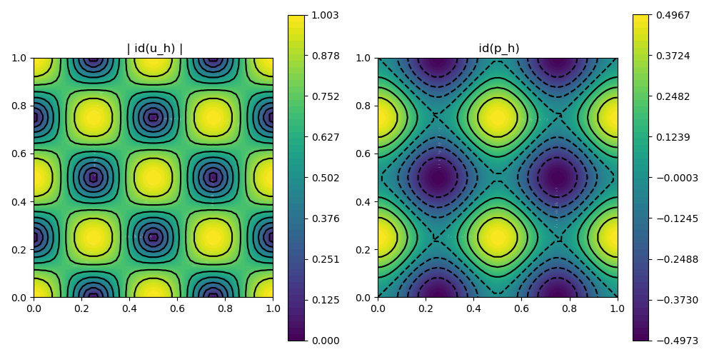

205 : Planar Lattice Flow 2D
This example computes an approximation to the planar lattice flow test problem of the Stokes equations
\[\begin{aligned} - \nu \Delta \mathbf{u} + (\mathbf{u} \cdot \nabla) \mathbf{u} + \nabla p & = \mathbf{f}\\ \mathrm{div}(\mathbf{u}) & = 0 \end{aligned}\]
with an exterior force $\mathbf{f}$ and some viscosity parameter $\nu$ and Dirichlet boundary data for $\mathbf{u}$.
Here the exact data for the planar lattice flow
\[\begin{aligned} \mathbf{u}(x,y,t) & := \exp(-8 \pi^2 \nu t) \begin{pmatrix} \sin(2 \pi x) sin(2 \pi y) \\ \cos(2 \pi x) cos(2 \pi y) \end{pmatrix}\\ p(x,y,t) & := \exp(-8 \pi^2 \nu t) ( \cos(4 \pi x) - \cos(4 \pi y)) / 4 \end{aligned}\]
is prescribed at fixed time $t = 0$ with $\mathbf{f} = \mathbf{u}_t - \nu \Delta \mathbf{u}$.
In this example the Navier-Stokes equations are solved with a pressure-robust variant of the Bernardi–Raugel finite element method and the nonlinear convection term (that involves reconstruction operators) is automatically differentiated for a Newton iteration.
module Example205_PlanarLatticeFlow2D
using GradientRobustMultiPhysics
using ExtendableGrids
# exact solution
function exact_velocity!(ν)
function closure(result,x::Array{<:Real,1},t)
result[1] = exp(-8*pi*pi*ν*t)*sin(2*pi*x[1])*sin(2*pi*x[2]);
result[2] = exp(-8*pi*pi*ν*t)*cos(2*pi*x[1])*cos(2*pi*x[2]);
end
end
function exact_pressure!(ν)
function closure(result,x::Array{<:Real,1}, t)
result[1] = exp(-8*pi*pi*ν*t)*(cos(4*pi*x[1])-cos(4*pi*x[2])) / 4
end
end
function rhs!(ν)
function closure(result,x::Array{<:Real,1},t)
result[1] = 8*pi*pi*ν*exp(-8*pi*pi*ν*t)*sin(2*pi*x[1])*sin(2*pi*x[2]);
result[2] = 8*pi*pi*ν*exp(-8*pi*pi*ν*t)*cos(2*pi*x[1])*cos(2*pi*x[2]);
end
end
# everything is wrapped in a main function
function main(; ν = 1e-3, nrefinements = 5, verbosity = 0, Plotter = nothing)
# set log level
set_verbosity(verbosity)
# generate a unit square mesh and refine
xgrid = uniform_refine(grid_unitsquare(Triangle2D),nrefinements)
# negotiate data
u = DataFunction(exact_velocity!(ν), [2,2]; name = "u", dependencies = "XT", quadorder = 6)
p = DataFunction(exact_pressure!(ν), [1,2]; name = "p", dependencies = "XT", quadorder = 4)
f = DataFunction(rhs!(ν), [2,2]; name = "f", dependencies = "XT", quadorder = 4)
# set finite element and reconstruction operator
FEType = [H1BR{2}, H1P0{1}]; IdentityV = ReconstructionIdentity{HDIVBDM1{2}};
# setup a bestapproximation problem via a predefined prototype
Problem = PDEDescription("planar lattice flow problem")
add_unknown!(Problem; equation_name = "momentum equation", unknown_name = "velocity")
add_unknown!(Problem; equation_name = "incompressibility constraint", unknown_name = "pressure")
add_operator!(Problem, [1,1], LaplaceOperator(ν; store = true))
add_operator!(Problem, [1,2], LagrangeMultiplier(Divergence))
add_operator!(Problem, [1,1], ConvectionOperator(1, IdentityV, 2, 2; testfunction_operator = IdentityV, auto_newton = true))
add_constraint!(Problem, FixedIntegralMean(2,0))
add_boundarydata!(Problem, 1, [1,2,3,4], BestapproxDirichletBoundary; data = u)
add_rhsdata!(Problem, 1, RhsOperator(IdentityV, [1], f))
@show Problem
# create finite element spaces and solve
FES = [FESpace{FEType[1]}(xgrid),FESpace{FEType[2]}(xgrid)]
Solution = FEVector{Float64}(["u_h","p_h"],FES)
solve!(Solution, Problem)
# calculate L2 errors for u and p
L2errorV = L2ErrorIntegrator(Float64, u, Identity)
L2errorP = L2ErrorIntegrator(Float64, p, Identity)
println("|| u - u_h || = $(sqrt(evaluate(L2errorV,Solution[1])))")
println("|| p - p_h || = $(sqrt(evaluate(L2errorP,Solution[2])))")
# plot
GradientRobustMultiPhysics.plot(xgrid, [Solution[1], Solution[2]], [Identity, Identity]; Plotter = Plotter, isolines = 9)
end
endThis page was generated using Literate.jl.
Default output:
julia> Example205_PlanarLatticeFlow2D.main()
PDE-DESCRIPTION
===============
system name = planar lattice flow problem
id | unknown name / equation name
[1] | velocity / momentum equation
[2] | pressure / incompressibility constraint
LHS block | PDEOperator(s)
[1,1] | 0.001 (∇u,∇v) (APT = SymmetricBilinearForm, AT = ON_CELLS, regions = [0])
| ((R(u) ⋅ ∇) u, R(v)) [AD-Newton] [∂velocity] (APT = NonlinearForm, AT = ON_CELLS, regions = [0])
[1,2] | (div(v),q) (APT = BilinearForm, AT = ON_CELLS, regions = [0])
[2,1] | none
[2,2] | none
RHS block | PDEOperator(s)
[1] | ((R(u) ⋅ ∇) u, R(v)) [AD-Newton] (APT = NonlinearForm, AT = ON_CELLS, regions = [0])
| (f, R(v)) (APT = LinearForm, AT = ON_CELLS, regions = [1])
[2] | none
BoundaryOperator[1] : BestapproxDirichletBoundary -> [1, 2, 3, 4]
BoundaryOperator[2] :
GlobalConstraints[1] : Mean[2] != 0
Problem =
ITERATION | LSRESIDUAL | NLRESIDUAL
--------------------------------------
1 | 4.445431e-17 | 9.171721e-02
2 | 1.068140e-16 | 1.005659e-06
3 | 1.036015e-16 | 2.431843e-10
4 | 1.063117e-16 | 1.461784e-16
|| u - u_h || = 0.00218809011322407
|| p - p_h || = 0.01641994916604906